Multas millonarias
La Superintendencia de Sociedades y la UIAF sancionan a las empresas que no implementan SAGRILAFT o SARLAFT como exige la norma.
PIRA RIESGOS SAS · Cumplimiento SARLAFT · SAGRILAFT · PTEE
Una sola vinculación mal hecha puede convertirse en una sanción de la Superintendencia, una multa o un proceso para el representante legal. En PIRA RIESGOS convertimos esa señal de riesgo en control, antes de que sea tarde.
Diagnóstico gratuito por WhatsAppRespuesta directa del equipo de PIRA RIESGOS — sin operadores ni menús automáticos.
El costo de no actuar
La Superintendencia de Sociedades y la UIAF sancionan a las empresas que no implementan SAGRILAFT o SARLAFT como exige la norma.
Sin evidencia de debida diligencia, la responsabilidad recae sobre el representante legal y el oficial de cumplimiento, no solo sobre la empresa.
No acreditar un Programa de Transparencia y Ética Empresarial (PTEE) puede dejarla por fuera de licitaciones y alianzas comerciales.
Sin cruzar contra listas OFAC, ONU o PEP, su empresa puede vincular sin saberlo a una persona señalada y quedar expuesta por asociación.
Contenido informativo. No reemplaza una asesoría profesional individual.
La diferencia PIRA
PIRA RIESGOS combina cuatro frentes que casi siempre están separados en el mercado, para que usted no tenga que armar el rompecabezas por su cuenta ni contratar cinco proveedores distintos.
Diseño e implementación de SARLAFT, SAGRILAFT y PTEE, con un oficial de cumplimiento que entiende su operación.
Una plataforma que cruza automáticamente sus contrapartes contra fuentes oficiales, sin depender de procesos manuales.
Formación por rol, con evaluación y evidencia de cobertura lista para mostrar en una auditoría.
Consultoría tradicional
PIRA RIESGOS
Prueba real
PIRA no es solo un buscador de listas. Es el ciclo completo de gestión del riesgo —identificación, medición, control y monitoreo— cubriendo LA/FT, PTEE, riesgos financieros (crédito, liquidez, mercado y operativo) y Seguridad y Salud en el Trabajo, todo en un solo lugar.
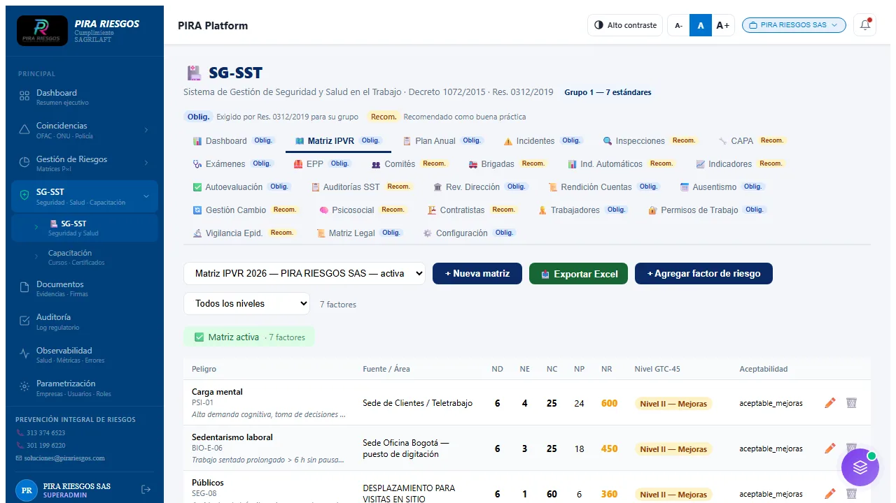
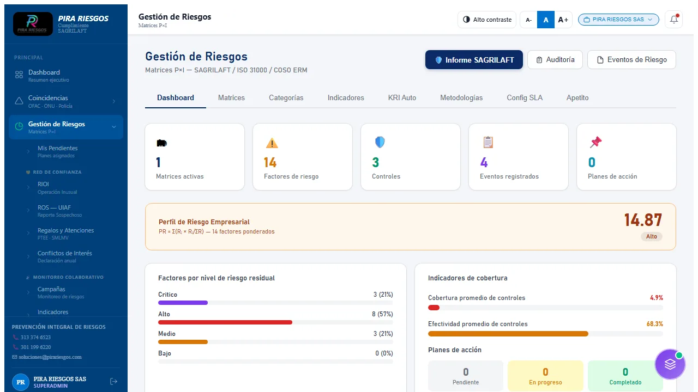
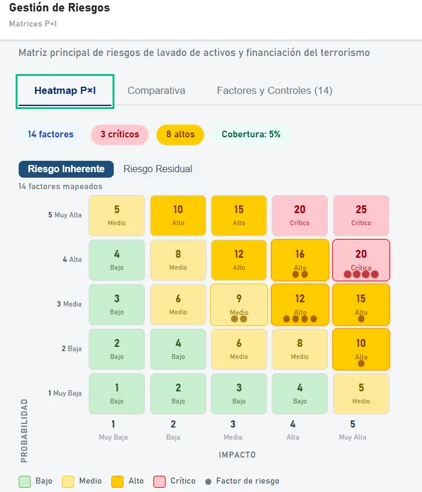
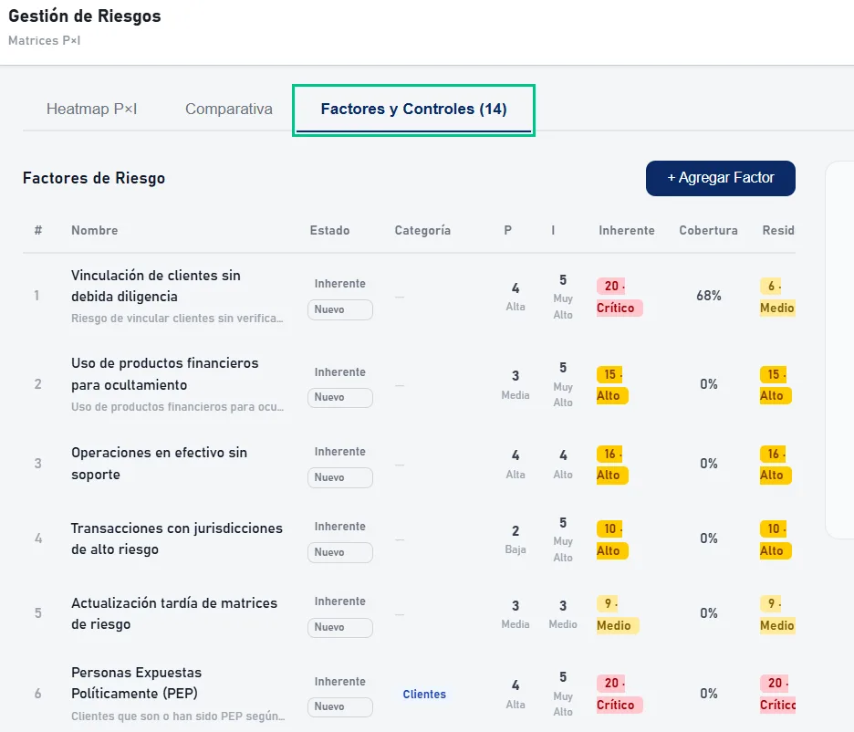
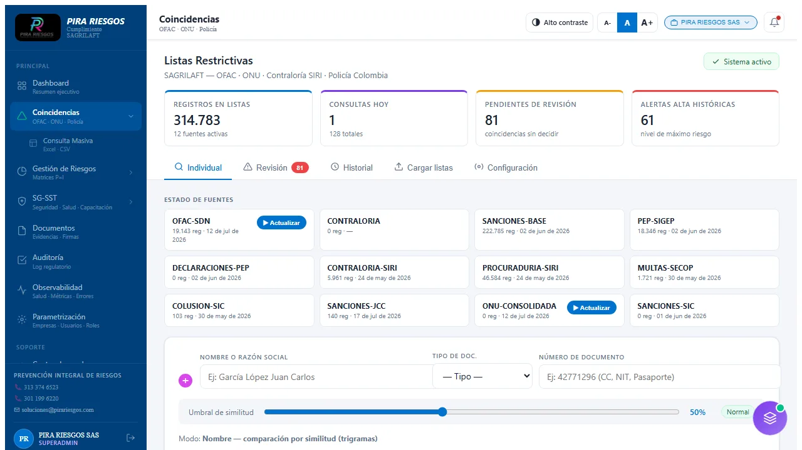
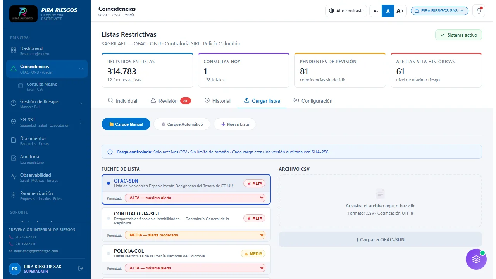
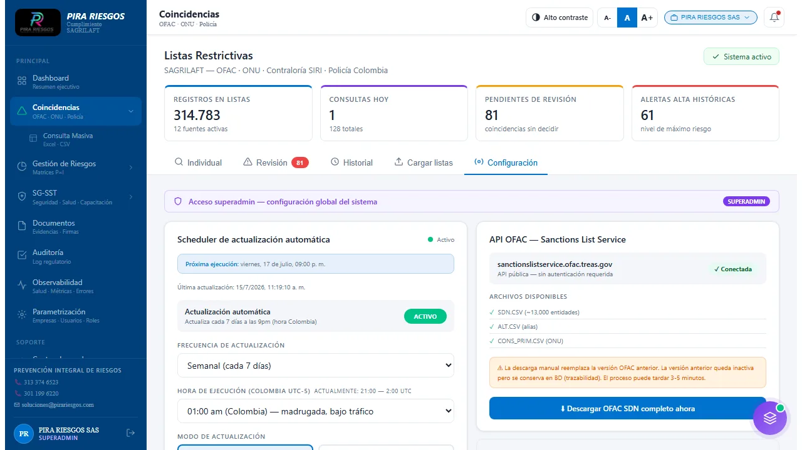
Detectar la coincidencia es solo el primer paso. Esto es lo que su equipo recibe y registra cuando la plataforma encuentra algo.
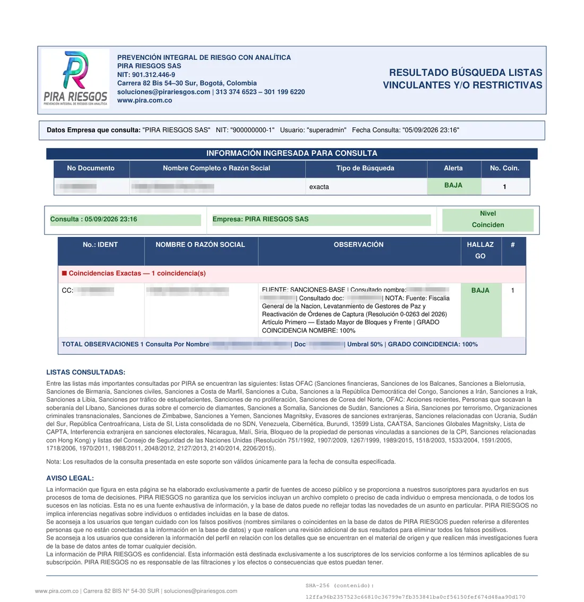
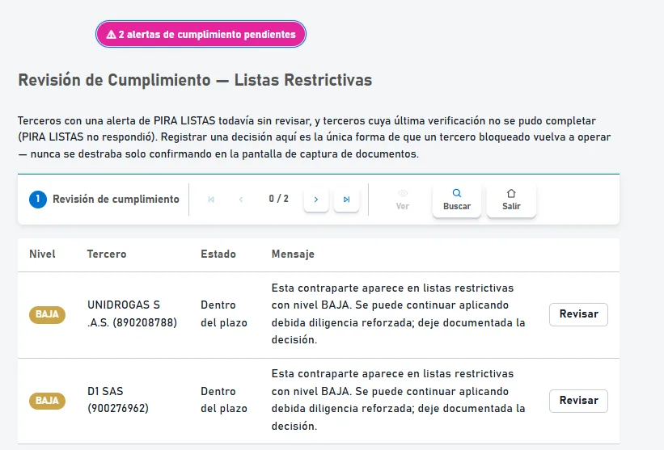
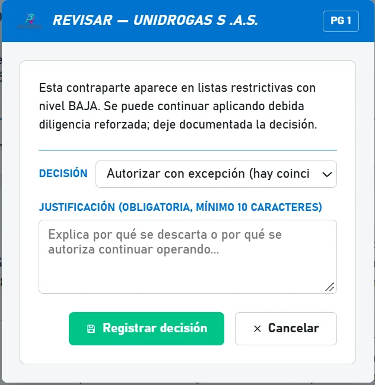
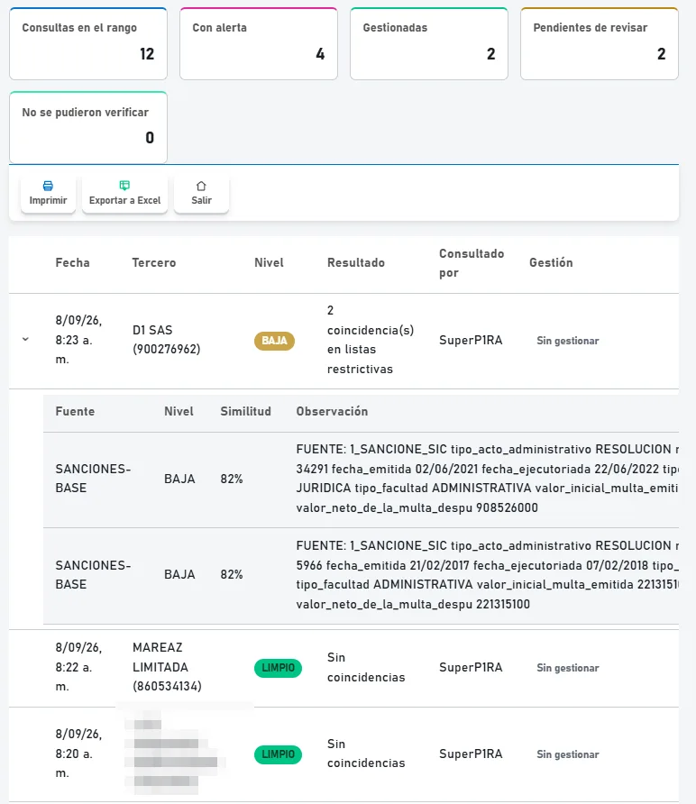
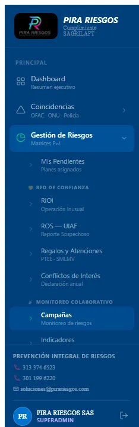
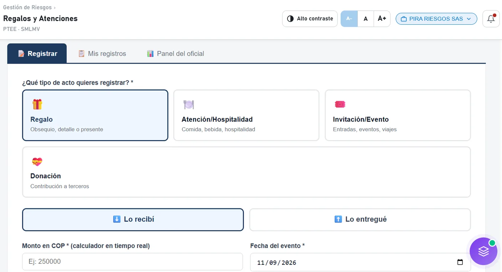
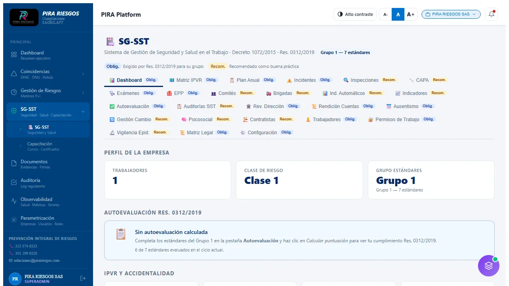
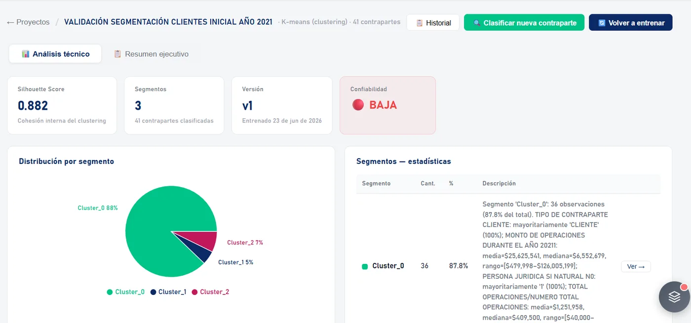
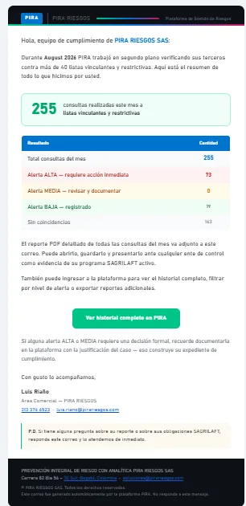
Capacitación
La capacitación en cumplimiento no sirve si nadie la recuerda. Por eso el LMS de PIRA usa neuroeducación —casos reales y microaprendizaje, no charlas genéricas de una hora— y deja evidencia lista para mostrar en cualquier auditoría.
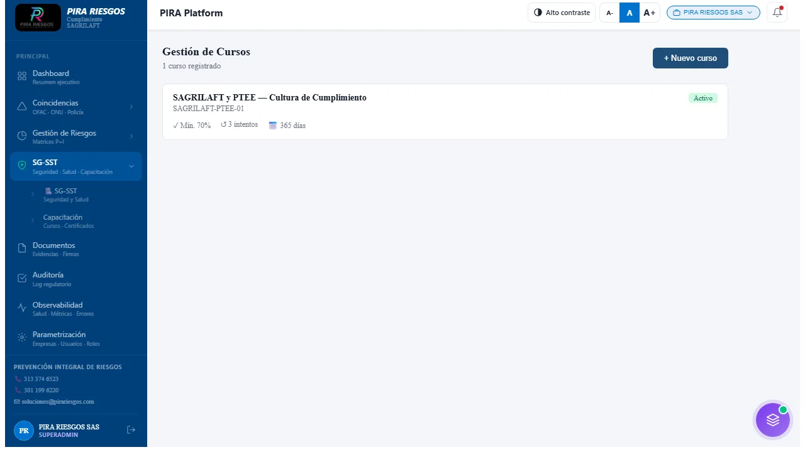
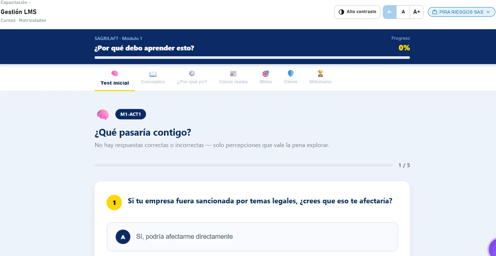
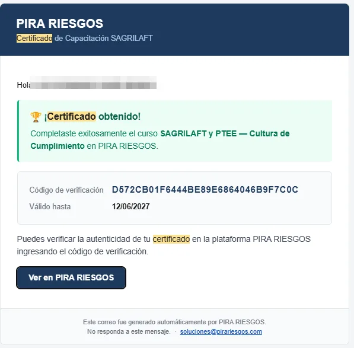
Tercerización
Muchas empresas cumplen la norma pero no tienen a nadie dedicado a operarla el día a día. PIRA pone ese equipo a su disposición, sin que usted tenga que contratar y formar a alguien desde cero.
Un profesional certificado gestiona su programa SARLAFT/SAGRILAFT/PTEE como si fuera parte de su equipo.
Alguien revisa y decide sobre cada coincidencia y cada caso, no solo la tecnología que las detecta.
Informes periódicos listos para junta directiva, revisoría fiscal o el ente de control que los solicite.
Un mismo equipo que conoce su operación responde ante la Superintendencia, no un centro de llamadas.
Para su equipo técnico
Su sistema puede consultar nuestras listas restrictivas directamente, en el mismo momento en que registra un cliente o un proveedor nuevo, sin salir de su plataforma actual.
POST https://TU-DOMINIO-PIRA/api/v1/external/listas/consultar
Authorization: Bearer pira_••••••••••••••••••••••••••••••••
Content-Type: application/json
{
"nombre_completo": "Nombre o razón social a validar",
"numero_documento": "CC o NIT sin puntos ni espacios",
"tipo_documento": "CC"
}
// Respuesta (ejemplo ilustrativo)
{
"id_consulta": "a1b2c3d4-...",
"nivel_alerta_maximo": "ALTA",
"total_coincidencias": 1,
"coincidencias": [
{
"fuente": "OFAC-SDN",
"nivel_alerta": "ALTA",
"porcentaje_similitud": 93
}
]
}Por qué PIRA
Cuéntenos qué hace su empresa y le decimos, sin compromiso, qué tan expuesta está y por dónde empezar.
Escribir por WhatsApp: 313 374 6523Contáctenos
Escríbanos por el canal que prefiera: WhatsApp directo, el formulario de aquí abajo, o nuestro sitio web completo.